Biography
Adam Sandler is a renowned actor and comedian known for his distinctive brand of humor and memorable performances in film and television. Born on September 9, 1966, in Brooklyn, New York, he is an American comedian, actor, screenwriter, and producer who gained widespread recognition through his time on "Saturday Night Live" and has since become a beloved figure in the entertainment industry. Primarily a comedic leading actor in film and television, his accolades include nominations for three Grammy Awards, five Primetime Emmy Awards, a Golden Globe Award, and a Screen Actors Guild Award. In 2023, Sandler was awarded the Mark Twain Prize for American Humor.Sandler broke into film with small parts in such comedies as Shakes the Clown (1991); Coneheads (1993), which was based on an SNL sketch; and Mixed Nuts (1994). He established himself as a star with Billy Madison (1995), the first of a number of movies he cowrote; in it he played the oafish scion of a wealthy businessman who must prove his worthiness to succeed his father by repeating his schooling. Sandler’s humour, while derided by some critics as puerile, proved popular with moviegoers. A succession of films in which he played similarly inept and foulmouthed characters solidified his reputation as a reliable box-office draw.In 1999 Sandler formed his own production company, which produced his own films as well as vehicles for friends, including David Spade and Rob Schneider. While continuing to star in such comedies as Mr. Deeds (2002) and Anger Management (2003), Sandler made forays into drama with Punch-Drunk Love (2002) and Spanglish (2004). The latter performances won him critical accolades. He reunited with Barrymore in the romantic farce 50 First Dates (2004). In 2007 he appeared in Reign over Me, a dark comedy in which he evinced a man whose wife and children died in the September 11 attacks. The following year he returned to lighter fare with You Don’t Mess with the Zohan, about an Israeli military operative who moves to New York City to become a hairdresser.
Film Career
Sandler has starred in numerous hit movies, including "Happy Gilmore," "The Waterboy," "Murder Mystery," and "Billy Madison." His unique comedic style, characterized by absurdity and endearing goofiness, has endeared him to audiences of all ages. Several Sandler comedies, such as "Jack and Jill" (2011), have been panned, resulting in nine Golden Raspberry Awards and 37 Raspberry Award nominations, more than any actor except Sylvester Stallone.Adam Sandler starred in multiple famous movies like these:
- The Waterboy(1998)
- Bedtime Stories(2008)
- Hotel Transylvania franchise (2012–2018).
- Pixels(2015)
- The Do-Over(2016)
- Murder Mystery(2019)
- Hubie Halloween (2020)
For more Information click here: Adam Sandler Movies
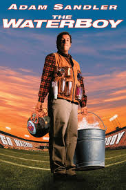 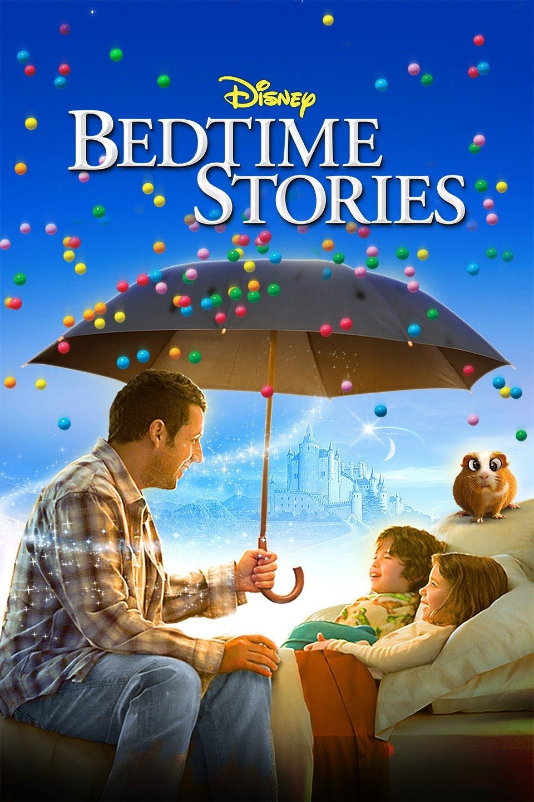 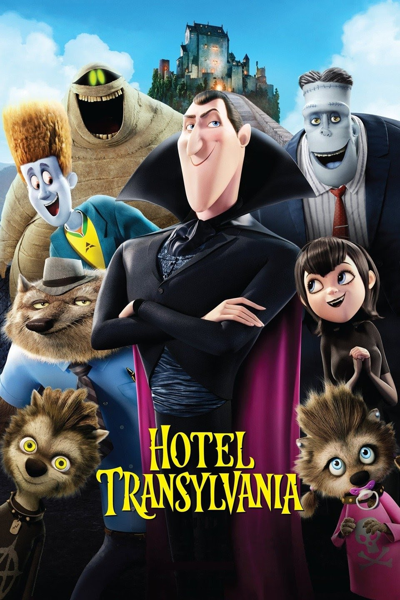 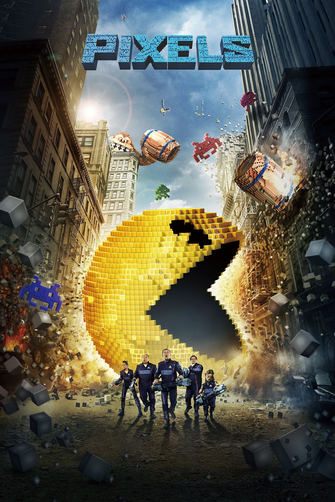 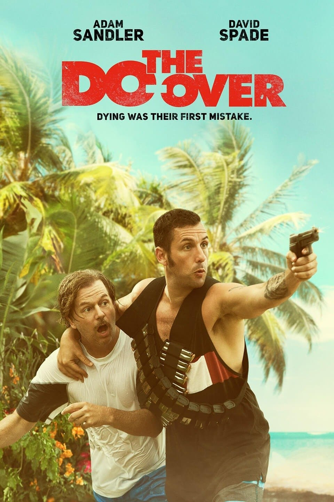 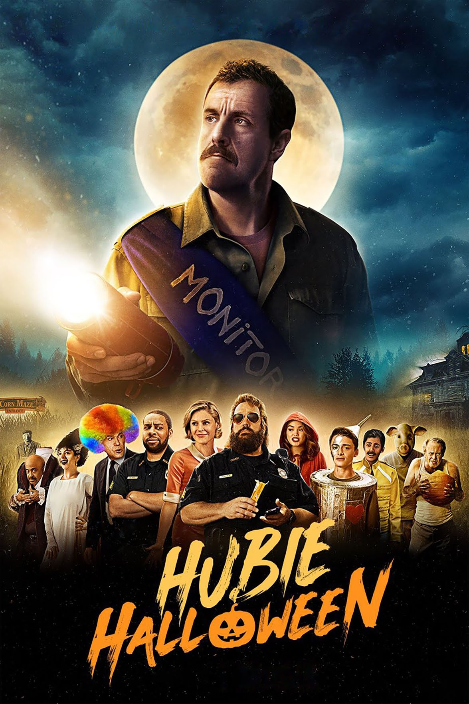
Here are some of the most popular movies of Adam Sandler:
|
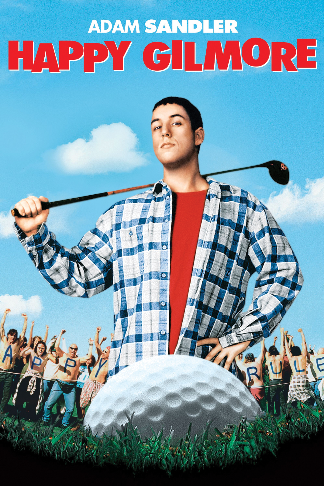
Adam Sandler as Happy Gilmore,
a high-strung wannabe hockey player who discovers a unique talent for golf and joins the pro golf tour to win money to save his grandmother's house. |
1996 |
|
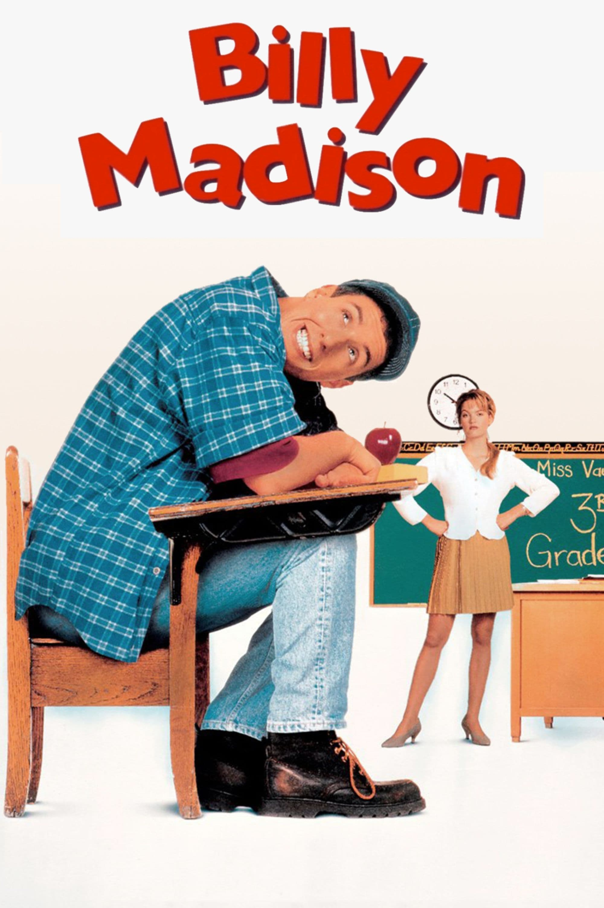
Billy Madison is the 27 year-old
son of Bryan Madison, a very rich man who has made his living in the hotel industry. Billy stands to inherit his father's empire but only if he can make it through all 12 grades, 2 weeks per grade, to prove that he has what it takes to run the family business. |
1995 |
|
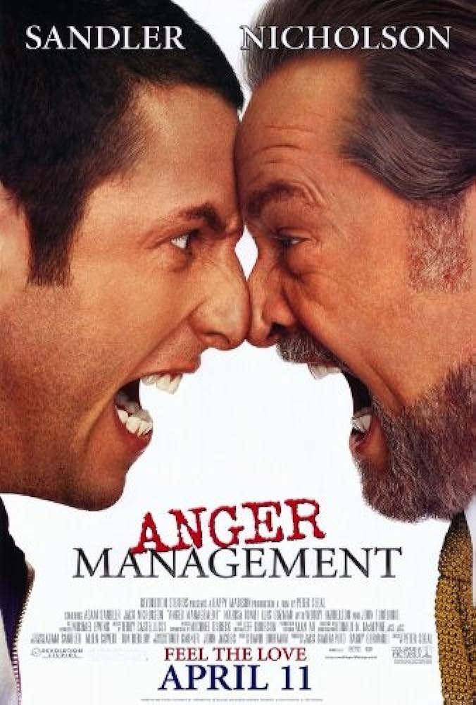
After a small misunderstanding
aboard an airplane escalates out
of control, timid businessman Dave Buznik is ordered by the court to undergo anger management therapy at the hands of specialist Dr. Buddy Rydell. But when Buddy steps up his aggressive treatment by moving in, Dave goes from mild to wild as the unorthodox treatment wreaks havoc with his life. |
2003 |
|
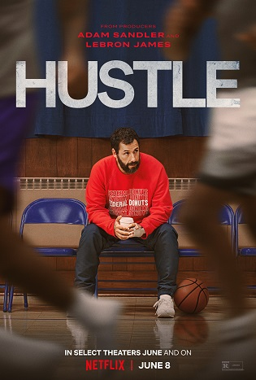
After discovering a once-in-a-lifetime player with a
rocky past abroad, a down on his luck basketball scout takes
it upon himself to bring the phenom to the States without his
team's approval. Against the odds, they have one
final shot to prove they have what it takes to make it in the NBA. |
2022 |
Dramatic Roles
Beyond comedy, Adam Sandler has demonstrated his versatility as an actor in dramatic roles. Notable examples include "The Cobbler" and "Uncut Gems," where he showcased his impressive range and acting prowess. Adam Sandler's journey from being primarily known for his comedic roles to successfully transitioning into dramatic acting has been a remarkable evolution in his career. While he initially gained fame through his comedic antics in films like "Happy Gilmore," "Billy Madison," and "The Waterboy," he proved his versatility as an actor by taking on more serious and complex roles in films like "The Cobbler" and "Uncut Gems."These dramatic roles not only showcased Sandler's impressive acting range but also challenged preconceived notions about his talent as an actor. While he can still make audiences laugh with his signature humor, his foray into dramatic roles has revealed a depth and complexity to his acting abilities that have solidified his status as a versatile and respected actor in the industry. Sandler's willingness to take on challenging and unconventional roles has expanded his horizons as an actor, earning him critical acclaim and the admiration of both fans and fellow industry professionals. His journey from comedy to drama is a testament to his dedication to his craft and his willingness to push boundaries as an artist.
|
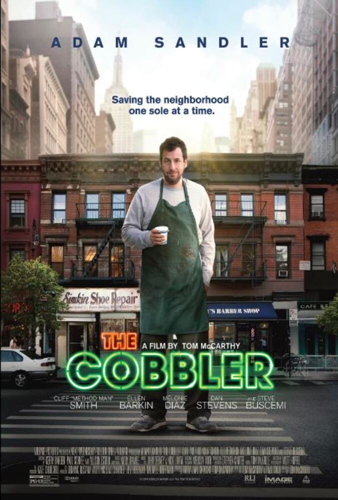
Max Simkin repairs shoes in the same New York shop that has been
in his family for generations. Disenchanted with the grind of daily life, Max stumbles upon a magical heirloom that allows him to step into the lives of his customers and see the world in a new way. Sometimes walking in another man's shoes is the only way one can discover who they really are. |
2014 |

Set in the diamond district of New York City, Howard Ratner, a jewelry store owner
and dealer to the rich and famous, must find a way to pay his debts when his merchandise
is taken from one of his top sellers and girlfriend.
|
2019 |